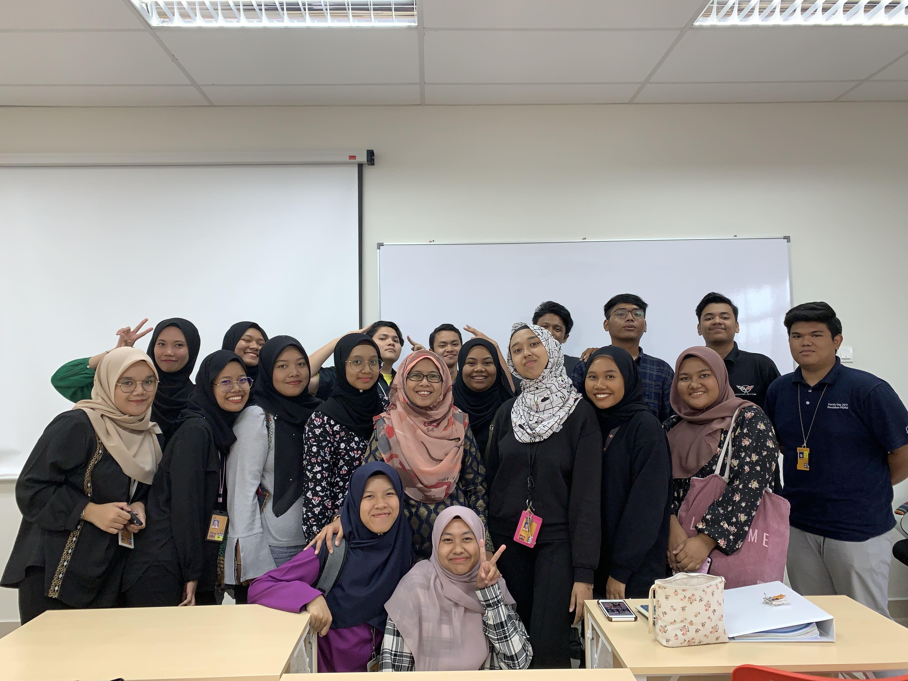

Friends
This is Me, Falisya and Izzati. We became close friends since 2nd semester. We did not get along on first semester until two class of our course combined together. The three of started to know each other and became friends. There are so many memories of three of us during our studies at Rembau. I am so glad and proud of our friendship as we all going through hard times together. I am really gonna miss them.

Classmates
This is my classmates for straight 5th semester in Rembau. I am so delighted to be one of their classmate. All of them are so easy-going, friendly, fun and lovely friends that I've ever met. They really help me a lot with assignments. Also, our lecturer are very fun and kind too.

Housemates
This is our final exam picture together in Dewan Biduanda. Starting from 2nd semester, the eleven of us live together and rented house at Taman Desa Permai Kundur since all of us did not get Rembau's hostel. We live for two semester and half and stop renting the house because of COVID-19 and it makes me really sad that all of us cannot meet each other for a long time. My housemates are like my family and living together with them is the best thing ever. It is so difficult to find a caring, lively and funny friends like them.
- End of page - Click to go up!